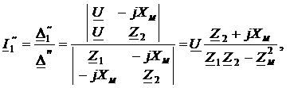

Подведём к зажимам цепи (рис. 2.56а) с параметрами R1, R2, L1, L2, M синусоидальное напряжение u = Umsinωt, рассчитаем токи I1, I2, I и построим векторные диаграммы напряжений и токов при согласном и встречном включениях двух индуктивно связанных катушек.
Согласное включение. Запишем
2ЗК в комплексной форме для первой и второй катушек и общий ток цепи (рис. 2.56а):
При комплекс полного (входного) сопротивления цепи
Ток в первой и второй катушках и общий ток цепи
Встречное включение. По аналогии запишем 2ЗК для первой и второй катушек, рассчитаем их токи и общий ток цепи:

Векторные диаграммы напряжений при согласном и встречном включении катушек представлены на рис. 2.56б, в. При построении ВД принято, что L1 > M и L2 > M. Условия L1 < M и L2 < M одновременно
существовать не могут. При этом токи и при встречном включении больше токов и , так как частные определители и Общий ток при согласном включении меньше общего тока при встречном включении ввиду того, что входное сопротивление